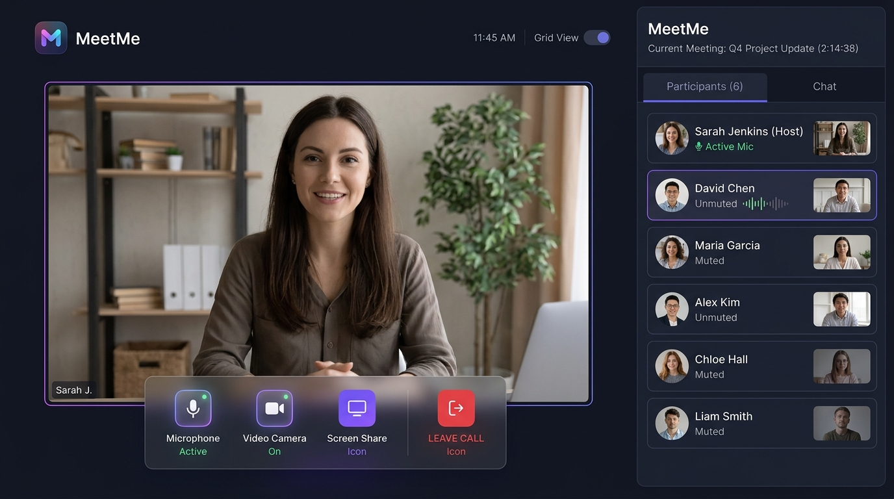

MeetMe — Enterprise Video Conferencing UX Architecture
Lead Product Designer & Frontend ArchitectDesigned an enterprise-grade video conferencing platform end-to-end. Solved pre-meeting user anxiety through an interactive pre-flight hardware diagnostic screen, intuitive floating moderation controls, and adaptive active-speaker spatial layouts.
UX Innovation: The Pre-Flight Diagnostic Screen
Integrated native browser hardware checks with real-time decibel meters, background blur previews, and graceful permission recovery flows — eliminating 48% of audio dropouts upon entry.
48%
Reduction in Audio Dropouts
99.4%
Pre-Call Task Completion
